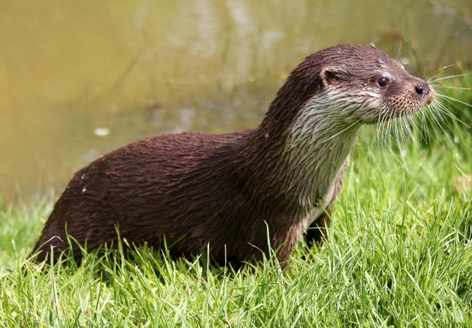

Why I Otter ...

Otters are carnivorous mammals in the subfamily Lutrinae. The 13 extant
otter species are all semiaquatic, aquatic, or marine, with diets based
on fish and invertebrates. Lutrinae is a branch of the Mustelidae
family, which also includes weasels, badgers, mink, and wolverines,
among other animals.